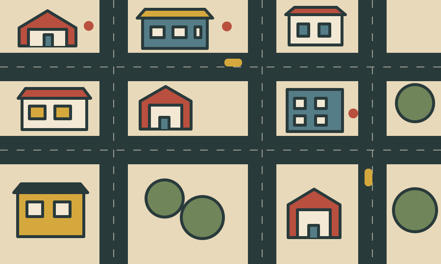
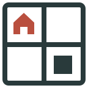

Working brand concept · 01 November 2026
One city.
Plenty of plans.
A competitive card-driven city builder where everyone makes their mark on one shared board.
Brand concept only. Name and visual identity are subject to review and clearance.

01 / The idea
A little city.
A lot of clever choices.
Warm, tactile and quietly competitive. Plotter celebrates the city everyone makes and the plans each player brings to it.
02 / The mark
A plot with possibility.

A four-part grid holds a house and a single built plot. The open spaces invite the next move.
Reverse lockup on deep ink.
03 / Colour
Printed in city colours.
Paper#F2E8D3
Ink#293A3B
Brick#B94F3E
City blue#557D88
Mustard#D5A83D
Park#71855B
04 / In use
A welcoming first move.
Menu conceptReady to make
Ready to make
your mark?
Choose your opponents and start building.
Illustrative mockup, not a screenshot or a claim of implemented UI.